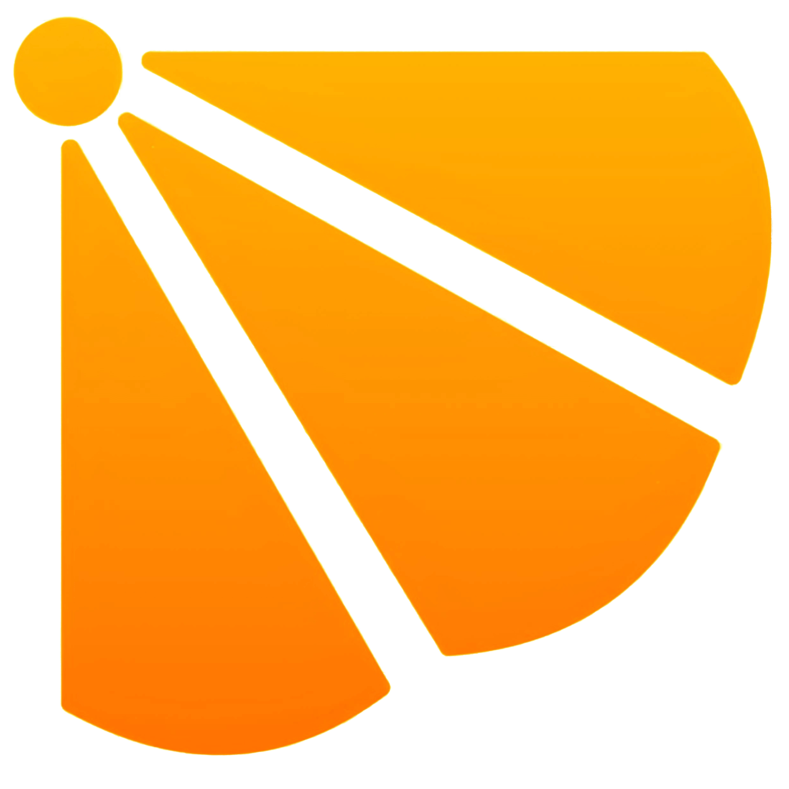

导航
Google
Baidu
Bing
DuckDuckGo
Yandex
Brave
GitHub
添加搜索引擎
管理自定义搜索引擎
香港实时脉搏
运输署行车时间 · 海底隧道与机场方向
同步中
正在读取官方行车时间…
实时交通消息与行车时间
等待数据
港铁网络
点击线路查看港铁服务详情
实时
附近站
正在读取下一班列车…
香港機場航班
即時抵達與離港資料
refresh
抵達 ARRIVALS
正在讀取…
出發 DEPARTURES
正在讀取…
資料更新時間 --
出发时间
热门通道与机场路线
实时
正在读取运输署行车时间…
最新交通消息
运输署特别交通消息
同步中
正在读取交通消息…
巴士到站
附近站点，或直接查询路线与站点
待查询
查询
附近
输入路线后查询；允许定位后可寻找附近九巴站点。
空气与降雨
AQHI 空气质素健康指数 · 香港天文台逐小时雨量
同步中
AQHI · 中环
--
读取中
附近雨量
--
读取中
可开启定位，以选择最近的雨量站；未授权时使用中环作为默认参考。
使用我的位置
急症室等候时间
医院管理局 · 甲类 T3 / 乙丙类 T45 中位数
同步中
正在读取急症室资料…
本月公众假期
1823 香港公众假期日历
同步中
正在读取公众假期…
陆路口岸轮候时间
入境处 · 香港居民 / 访客 · 入境及出境
同步中
正在读取口岸轮候时间…
快捷访问
港幣 / 人民幣
HK$1 = ¥--
匯率日期 --
港幣 / 日圓
HK$1 = ¥--
即時參考匯率
港幣 / 瑞士法郎
HK$1 = CHF --
即時參考匯率
恒生指數
--
市場數據讀取中
美元 / 港幣
US$1 = HK$--
即時參考匯率
CITY FEED
正在匯集交通、新聞及市場資料…
浙江丽水云和梯田 / 站长拍摄
--:--:--
正在加载新闻...
退出全屏模式
管理书签
抓取图标
挑选图标
取消
删除
保存
添加自定义搜索引擎
抓取图标
挑选图标
取消
添加
管理自定义搜索引擎
关闭
添加新引擎
管理新闻RSS源
关闭
添加RSS源
选择 Material Design Icon
在新窗口中打开完整 Material Icons 列表
关闭
首页背景设置
从 Unsplash 获取随机背景
恢复默认背景
当前背景将保存到浏览器 Cookies 中，下次打开页面自动应用。
关闭
导出 / 导入 Cookies 数据
导出所有 Cookies 数据（JSON）
导入 Cookies 数据
导出将包含所有书签、自定义搜索引擎、RSS源、主题设置、背景等。
导入后页面将自动刷新。
关闭